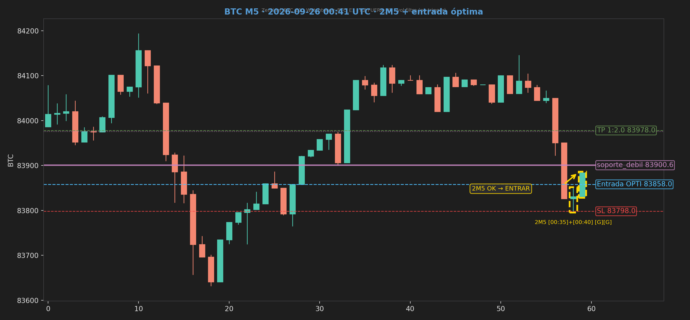

| Precio | 83883.6 |
|---|---|
| Veredicto | Esperar (LONG) |
| Entrada óptima | 83858.0 |
| ICT | 83914.2→83858.0 · Refinada 83914.2→83858.0 (FVG BULLISH edge) · Sweep swing_high @ 84106.0 + reclaim · PD DISCOUNT · H1 COMPLETED_BEAR |
| Plan | Entry 83858.0 · SL 83798.0 · TP 83978.0 |
| E2 / Break | BREAK / E1 — Sin reversión E2 — E1 primario |
| Métricas | Rules 100% · Neural 65% · ML 18.5% · Confluencia MEDIA — 50% · Rules 100%; Neural gated 60% (medium); ML 18% veto suave; 2M5 OK; Break operable |
| Historial ref | btc-028 · 2026-09-25 19:30 NY · Entry 83849.7 · BUENA — precio cerca de última Entry + 2M5 OK + zona OK · (MISMA ZONA) · Δ Entry +8.3 pts (+0.010%) · precio→última 33.9 pts (0.040%) · precio→actual 25.6 pts (0.030%) |
| Bando usado (lado asumido) | BULLISH |
| Bando mercado (H1) | NEUTRAL |
| R:R | 1:2 |
| Dist. a Entry | -25.6 pts (0.030%) |
| Dist. a SL | -85.6 pts (0.102%) |
| Dist. a TP | +94.4 pts (0.113%) |
| Riesgo (pts) | 60.0 |
| Winrate setup | ~82% — histórico E1 BTC (100% reglas OK) |
| Score Rules extendido | 90% |
| Estado 2M5 | VÁLIDO LONG (2M5) |
| Bias H1 vs bando | H1 NEUTRAL · CLI BULLISH |
| Calidad break/reverse | BREAK (continuación E1) |
| Neural grade/conf | B · conf. medium · 65% WIN |
| Rules E1 detalle | 6/6 (100%) |
| Vol Zentinel (filtro) | muy_bajo · 0.13× · Zentinel_BTC_E1 |
| MACD-quant (filtro) | en contra · Hist -225 · never trigger |
| Watchtower KZ | FUERA_NY · Watchtower_BTC_E1 |
| Chart | Preview en navegador |
